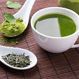

Products
Tea for losing weight
Green Tea
The Green tea boost metabolic rate and increase fat burning thanks to the natural thermogenic properties provided by caffeine, and by the plant compounds such as catechins.
Black Tea
Thanks to its diuretic properties, black tea and a flat stomach could well go hand in hand! Drunk between meals, it also has an appetite-suppressant effect and helps to avoid snacking, which contributes to weight loss. Very low in calories and sodium, black tea can be consumed daily.
Oolong Tea
Oolong tea help enhance weight loss by improving fat burning and speeding up metabolism. The fat-burning effects of oolong tea lead directly to weight loss by aiding lipid metabolism
White Tea
White tea has high antioxidant value, which makes it an excellent ally for reducing weight naturally. White tea is also a zero-calorie drink which is pleasant and refreshing, as well as a much healthier alternative to sugary drinks.
Tea for Detox
Green Tea
The Green tea is a natural flush for your system it will not only help your body increase the production of detoxification properties. Whilst also boosting your immune system while protecting your liver from the damaging effects of toxic substances such as alcohol.
Nettle Tea
Stinging nettle leaf is a gentle diuretic, helping the body to process and flush away toxins. It flushes the kidneys and bladder to prevent and soothe urinary tract infections. Nettle tea is ideal for sodium induced water retention and high blood pressure.
Fennel Tea
Fennel tea helps flush the body of excess fluids through its diuretic properties. Furthermore, fennel helps to eliminate toxins and reduce the risk of problems with the urinary tract. It also stimulates perspiration through its diaphoretic properties.
Dandelion Tea
Dandelion tea is an excellent source of potassium, a mineral and electrolyte that stimulates the heartbeat. Potassium helps the kidney filter toxins more effectively and improve blood flow. The polysaccharides in dandelion are known to reduce stress on the liver and support its ability to produce bile.